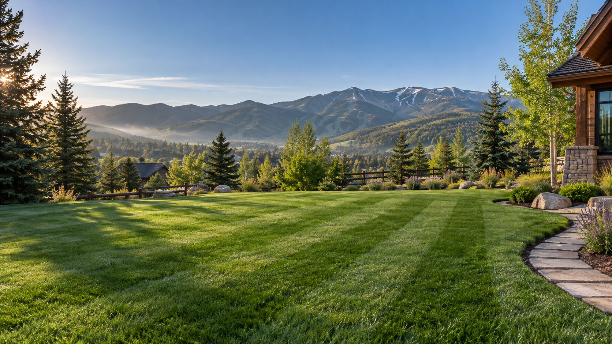

01
Routine lawn mowing
Consistent, tidy mowing that keeps your grass healthy and your property looking its best.
Get a quote ↗
Local lawn care · Steamboat Springs
Professional mowing and property cleanup with affordable pricing, dependable scheduling, and results you’ll be proud of.
Choose a preferred day, tell us your lawn size, and get a practical planning guide.
Serving Steamboat Springs and nearby communities with care.
We keep lawn care simple: friendly service, reliable scheduling, and careful work that leaves your property looking clean, sharp, and cared for.
Let’s talk about your yard →What we do
Whether you need a regular mow or a once-over before the season changes, we’ll help keep your property in shape.
Consistent, tidy mowing that keeps your grass healthy and your property looking its best.
Get a quote ↗Clean lines around walkways, beds, fences, and hard-to-reach spots.
Get a quote ↗Spring and fall cleanup, including leaves, branches, and general yard debris.
Get a quote ↗Small commercial mowing, weed control, basic maintenance, and cleanup requests.
Get a quote ↗ONE VISIT.
DONE WITH CARE.
The C.R. standard
Every service is shaped around the basics that make a property feel cared for: a clean mow, thoughtful edges, and a tidy finish before we leave.
Simple from the start
Call or text us with a few details about your property.
We’ll learn about your lawn, cleanup, or maintenance request.
Receive clear, no-obligation pricing before work begins.
We show up, do careful work, and leave things looking great.
Proudly local
We provide lawn mowing and property cleanup throughout Steamboat Springs, Colorado, and nearby communities.
Not sure if you’re in our service area? Choose a preferred visit time below and we’ll confirm service availability.
Check your preferred day →Plan your visit
Most homeowners start with one visit. You can choose weekly or every-other-week service too, but there is no contract required.
Enter the mowable square footage and the range scales smoothly with your exact lawn size—no huge yard brackets. Your final quote always comes first.
What photos can help us check
Access, edging, obstacles, grass height, and visible slope. Photos cannot reliably measure exact square footage or confirm a final price.
Get in touch
On a computer, save or copy the information below. On a phone, use the call or text buttons for a quick response.
Already built your request?
Copy the details, then text or email us so we can confirm the date and time.